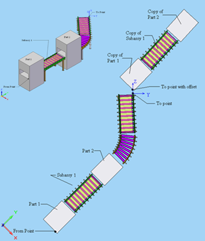
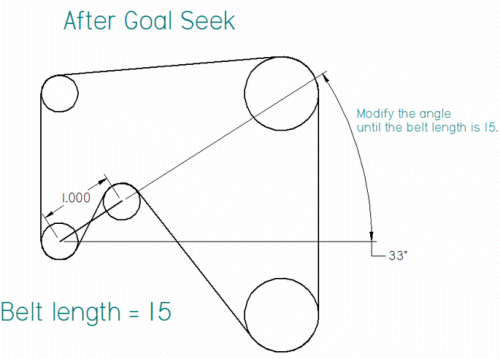
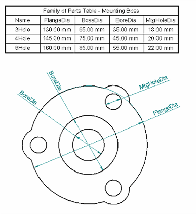
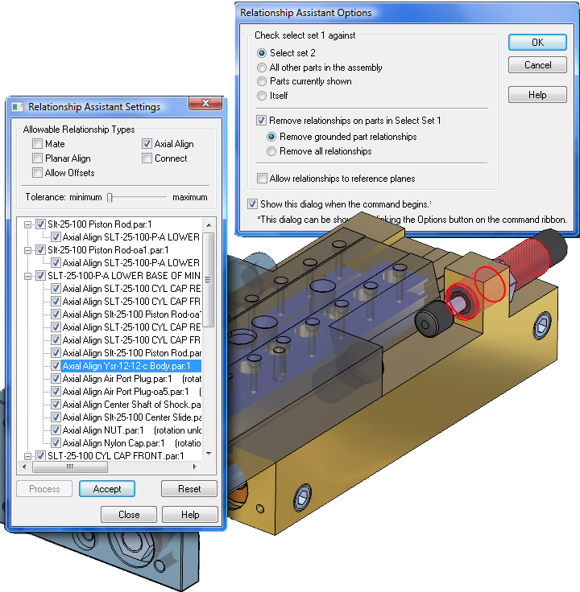

|
 SOLID EDGE V20 YENÝLÝKLERÝ SOLID EDGE V20 YENÝLÝKLERÝ
Parça Tasarýmý ve Teknik Resim Konularýnda 170'den Fazla Yenilik
UGS Velocity Series ürün grubunun çekirdek CAD çözümü olan Solid Edge'in yeni sürümü V20, parça tasarýmý ve teknik resim konularýnda 170'den fazla yenilik sunarken üç ana konuda yoðunlaþýyor. Büyük boyutlu montaj gereksinimi olan tesis ve ekipman tasarýmý konularýna daha fazla aðýrlýk veriyor, mühendislikte üretkenliði arttýrýcý yenilikler sunuyor ve tasarýmda iþbirliðine ilave özellikler getiriyor.
Büyük Boyutlu, Çok Parçalý Montajlar için Ýlave Kolaylýklar
Solid Edge V20 büyük boyutlarda montaj çalýþmalarý olan firmalar için zaten lider konumdaki büyük ve çok parçalý montaj modelleme özelliklerini bir adým öteye taþýyor. Yenilikler sayesinde kullanýcýlar tesis tasarýmlarýný, yerleþim planlarýný gerçek makine komponentler ile rahatlýkla ve kolayca yapabilirken büyük boyutlu makineler ve aðýr endüstriyel vasýtalar tasarlayanlar da birçok avantajlar kazanýyorlar. Ayrýca yeni sürüm 64-bit mimarisindeki baþarýsýný daha fazla uygulamayla zenginleþtirmeye devam ediyor, 64-bit platformlardaki performansýný arttýrarak büyük montajlar üzerinde çalýþanlara yardýmcý oluyor.
Devasa (>100.000 parça) montajlara yönelik yeni özellikler:
Zones: Büyük montajlarda istenilen bölgelerin tasarým anýnda izole edilmesini saðlayarak tasarýmcýlara yardým ediyor. Devasa boyutlardaki montajlarda performansý arttýrýyor. Bölgeler arasýnda geçiþ yaparken ve devasa montaj çalýþmalarýný açarken ciddi boyutlarda performans avantajlarý saðlýyor.
Machine and Factory Layout: Alt montaj gruplarýný hýzlý manipule ederek çabucak geniþ montajlar oluþturmayý mümkün kýlýyor. Makine ve techizatýn, konveyor ve taþýyýcý sistemler gibi baðlantý sistemlerinin fabrika yerleþimi kolayca gerçekleþtirilebiliyor.

Component Grouping: Malzeme bilançosu ve montaj aðacý organizasyonunda ilave kontroller getiriyor. Parça ve alt montajlarýn organize gruplar halinde toparlanmasýný saðlýyor.
Drawing Review Mode: Teknik resimler montajda olduðu gibi aktif olmadan (inactive) kullanýlabiliyor. Devasa montajlarýn teknik resimleri saniyeler içinde açýlýyor. Sadece gözatýlmak istenen teknik resimler için harcanan zamaný ciddi oranda azaltýyor.
Mühendislikte Üretkenlik Üzerine
Solid Edge V20, CAD endüstrisinde her biri birer ilk olarak deðerlendirilecek bir çok özellikle mühendislikte üretkenliðe önemli ölçüde katký saðlýyor. Örneðin V20'nin 2D Goal Seeking - 2 Boyutlu Hedef Tesbiti teknolojisi CAD endüstrisine yepyeni bir soluk getiriyor.
Yeni ve güncellenmiþ araçlar:
2D Goal Seeking: 2 Boyutlu Hedef Tesbiti, matematiksel baðýntýlara oranla grafiksel olarak daha kolay ifade edilebilen 2 Boyutlu mühendislik senaryolarýný gerçek zamanlý olarak çözmeye yarayan bir teknoloji. Mekanik bir hesaplamanýn ulaþýlmak istenen hedef deðerini saðlayan grafik sonucu, kullanýcýnýn belirlemiþ olduðu parametreleri deðiþtirerek bulan bir sistem. Eriþilen sonuçlar gerçek bir 2 boyut-3 boyut hibrid tasarým ortamýnda 3 boyutlu geometrilere komuta etmekte kullanýlabiliyor.

Engineering Reference: Özellikle diþli konusunda yeni eleman tipleriyle zenginleþtirildi. Artýk raporlama konusunda daha kabiliyetli.
Machinery Library: Makine elemanlarý kütüphanesi, yeni parça ve standardlar ile zenginleþtirilmeye devam ediyor.
Parça ve sistem tasarýmýnda yenilikler:
Feature Grouping: Unsur gruplama, unsurlarýn biraraya toplanarak tek bir objeymiþ gibi kontrol edilebilmesini saðlýyor. Seçme iþlemlerini ve unsur kütüphaneleri oluþturmayý hýzlandýrýyor.
Feature Library: Unsur kütüphanelerinde yerleþtirme esnasýnda belirecek yardýmcý bilgiler tanýmlanabiliyor. Bu sayede baþkalarýnýn kullanýmý daha kolaylaþtýrýlmýþ oluyor.
Sensors: Yýllardýr Solid Edge'e özgü bir uygulama olan sensörler ile tasarýmýnýzýn herhangi bir parametresini tasarým anýnda sürekli monitör edebiliyorsunuz. Üstelik artýk daha kolay ve daha fazla görsel yardým ile.
2 boyutlu çalýþmalarda yenilikler:
Tabulated Drawings: Tablo tanýmlý teknik resimler, bir aileye ait farklý boyutlara sahip parçalarýn tek bir çizim ve tablo ile ifade edilmesi anlamýna geliyor. Bu konuda tablo sütünlarýný kullanýcýlar istedikleri gibi tanýmlayabiliyor, seçilen aile üyelerinin aile deðiþkenleri tabloya otomatik aktarýlýyor, deðiþiklikler sistem tarafýndan takip edilerek güncelleniyor.

Tasarýmda Ýþbirliði ve Paylaþým
Solid Edge V20, tasarýmda iþbirliði adýna Teamcenter SOA (Service Oriented Architecture) yazýlýmý desteði ile uzaktan merkezi veritabaný eriþimlerini mümkün kýlarken SEEC'in (Solid Edge Embedded Client - Solid Edge içindeki gömülü istemci) kabiliyetlerini yeni bir düzenleyici ile arttýrýyor. Ýlave olarak AutoCAD ve benzeri 2 boyutlu sistemlerden geçiþi kolaylaþtýrmak adýna yeni eklentiler sunuyor. CATIA, Pro-E, Inventor gibi çeþitli yazýlýmlar için çeviricileri geliþtirirken direk STL formatý okuyabilme özelliðini getiriyor. Montaj iliþkilendirme bilgisi olmayan montaj çalýþmalarýný otomatik iliþkilendirmeye yarayan yeni ve eþsiz bir yeniliði CAD endüstrisi ile tanýþtýrýyor. Ayrýca farklý CAD formatlarýndan aktarýlan parametresi olmayan modelleri deðiþtirebilme kabiliyeti Direct Editing iþlevlerini dinamik önizleme yeteneði ile zenginleþtiriyor.

Tüm bunlara ilave olarak PMI verilerinin teknik resme otomatik olarak aktarýlmasý, tasarým parametrelerini belli deðerler arasýnda sýnýrlandýrabilme, belli bir süre kullanýlmayan parçalarýn hafýzadan otomatik olarak kaldýrýlmasý, ilave sac parça modelleme özellikleri gibi birçok yenilik V20 ile beraber geliyor. Ayrýca V20 ile beraber Solid Edge artýk Windows Vista'yý, Internet Explorer V7'yi ve Direct 3D grafik motorunu destekliyor.
Yenilikleri gösteren YouTube videolarý için týklayýnýz;
www.youtube.com/view_play_list?p=CBAFB6415BCC450E
Daha fazla bilgi için: www.solid-edge.com
Ýrtibat:
Destek Yazýlým Ltd. Þti.
Üsküdar Ýstanbul
Tel: (216) 651 98 01
www.destek-yazilim.com
|